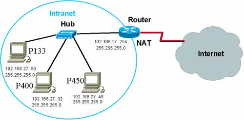

IP-Adresse
Jeder Computer der Verbunden ist mit einem Netzwerk oder dem Internet hat seine eigene IP-Adresse. Die IP eines jeden angeschlossenen Geräts hat eine eindeutige IP-Adresse. Eine interne IP wird verwendet in einem Intranet, während eine externe IP-Adresse im Internet verwendet wird. Man kann ein Netzwerk in weitere kleinere Netzwerke unterteilen. Eine Subnetzmaske ermöglicht es, dass ein lokales Intranet Zugang zum Internet hat. Eine Subnetzmaske hat selber eine eigene IP-Adresse. 
IPv4
 IPv4 wurde im Jahr 1981 veröffentlicht. Die IPv4-Adresse besteht aus vier Zahlenblöcken (z.B. 192.125.043.099), jeder einzelner Zahlblock ist acht Bit groß,
dadurch kann jeder Zahlenblock einen Wert zwischen 0 und 255 annehmen.
Daher ist es ungefähr möglich 4,3 Milliarden IP-Adressen zu vergeben. Aufgrund dieser sehr begrenzten Anzahl an IPv4 Adressen gibt es
mittlerweile eine neue Technik, namens IPv6. Die IPv4 Adresse ist somit insgesamt 32 Bit lang, die Werte der Zahlen können zwischen 0 und 255 liegen. Diese vier
Zahlenblöcke werden durch einen Punkt voneinander getrennt.
IPv4 wurde im Jahr 1981 veröffentlicht. Die IPv4-Adresse besteht aus vier Zahlenblöcken (z.B. 192.125.043.099), jeder einzelner Zahlblock ist acht Bit groß,
dadurch kann jeder Zahlenblock einen Wert zwischen 0 und 255 annehmen.
Daher ist es ungefähr möglich 4,3 Milliarden IP-Adressen zu vergeben. Aufgrund dieser sehr begrenzten Anzahl an IPv4 Adressen gibt es
mittlerweile eine neue Technik, namens IPv6. Die IPv4 Adresse ist somit insgesamt 32 Bit lang, die Werte der Zahlen können zwischen 0 und 255 liegen. Diese vier
Zahlenblöcke werden durch einen Punkt voneinander getrennt.
IPv6
IPv6-Adressen sollen in den nächsten Jahren die IPv4 Adressen ablösen. Die IPv6 Adressen ist 128 Bit groß. Die IPv6-Adressen werden hexadezimal notiert, wobei die Zahlen in acht Blöcke mit jeweils 16 Bit (4 Hexadezimal stellen) unterteilt wird. Diese Blöcke werden durch Doppelpunkte getrennt: (z.B.2001:0db8:85a3:08d3:1319:8a2e:0370:7344). Insgesamt bietet IPv6 etwa 340 Sextillionen IP-Adressen.
DNS (Domain Name System)
DNS wurde im Jahr 1983 von Paul Mockapetris entworfen. Es wird verwendet, um einer Domain eine IP-Adressen zuzuordnen. Das DNS übersetzt zum Beispiel dann die Domain www.google.de in die IPv4-Adresse 172.217.21.067. Das ist vergleichbar mit einem Telefonbuch, welche den Namen einer Person in eine Telefonadresse übersetzt. Durch das DNS wird das Aufrufen einer Internetseite vereinfacht, weil sich ein Mensch einen Namen besser merken kann, als eine IP-Adresse. Es ist auch möglich, dass das DNS eine IP-Adresse in eine Domain übersetzt. Ein weiterer Vorteil ist, dass die IP-Adresse von einem Web Server verändert werden kann ohne, dass der Besucher der Internetseite sich eine neue IP-Adresse merken muss, da die Domain die Gleiche bleibt. Die Domain wird dann nur von der DNS in eine andere IP-Adresse übersetzt. Seit dem Internetseiten in manchen Ländern gesperrt werden, gibt es einige alternative DNS-Anbieter, einige auch kommerziell, die nach eigener Angabe nicht zensieren. DNS hat folgende Eigenschaften:
- Verschiedene Namensserver verteilt auf der ganzen Welt
- Hierarchische Strukturierung des Namensraums in Baum-Form
- Eindeutigkeit der Domains
- Erweiterbarkeit des Namensraum
Domain-Namensraum
Der Domain-Namensraum hat eine baumförmige Struktur. Die Blätter und Knoten dieses Baumes bezeichnet man als Labels. Ein Label ist eine Zeichenkette, welche mindestens 1 Byte und maximal 63 Bytes groß ist. Eine Domain wird immer von links nach rechts in eine IP umgewandelt. Einige IPs und die dazugehörigen Domains sind auf dem Computer gespeichert. Wenn die Domain dem Computer nicht bekannt sein sollte, sendet der Computer eine Anfrage an einen Namensserver und dieser fragt eventuell einen anderen falls Namensserver, falls dieser die IP nicht selber kennen sollte. Diese Namensserver werden von großen Suchmaschinen finanziert, da diese ein Interesse dran haben, dass man das Internet benutzen kann.TCP/IP
Geschichte: Die Protokollfamilie TCP/IP hat sich aus Arbeiten des US-Verteidigungsministerium entwickelt. Nachdem das Aparnet in den Sechzigern im Militär Standard wurde, suchte das US-Militär nach alternativen Übertragungstechniken. Robert E. Kahn fiel im Jahr 1972 auf, wie wichtig die Möglichkeit sein würde, unabhängig von der Übertragungstechnik über alle Netze kommunizieren zu können. Im Jahr 1973 wurde von Kahn und Cerf ein Modell entwickelt, welches die Unterschiede zwischen physischen Netzwerken ausgleicht, dies geschieht durch die Abstraktionsschicht des IP. Ist das meist benutzte Netzwerkprotokoll in Netzwerken. Die Abkürzung TCP/IP steht für Transmission Control Protocol/Internet Protocol, dies heißt auf Deutsch Weiterleitungssteuerungsprotokoll/Internetprotokoll. Das TCP/IP wird größtenteils im Internet verwendet, weil es unabhängig vom Betriebssystem ist und auf nahezu allen Plattformen läuft. Ein Nachteil von TCP/IP ist, dass es verschiedene Datenpakete gibt, die alle verschiedene Wege nehmen können und wenn ein Teil verlorene geht, führt das dazu, dass alles noch einmal angefordert werden muss. Außerdem erfordert die Konfiguration von TCP/IP Fachkenntnisse. TCP/IP ist routingfähig, das ist wichtig, da das Internet aus vielen kleinen und fremden Netzwerken besteht und man sonst nicht mit anderen fremden Netzwerken kommunizieren könnte. Eine Voraussetzung um mit fremden Netzwerken kommunizieren zu können, ist die
- IP-Adresse
- Ein Router, der die Anfrage weiterleitet
Referenzmodell
Eine Eigenschaft vom Referenzmodell ist die gewollte Wiederverwendung und ist damit geeignet neue Modelle zu entwickeln. Es ist ein Referenzmodell, wenn es ein allgemeines Modell für eine Klasse von Sachverhalten ist, welches folgende Eigenschaften hat: Auf Basis des allgemeinen Modells können spezielle Modelle (als Grundlage für die Konstruktion bestimmter Sachverhalte) geplant werden. Das allgemeine Modell kann als Vergleichsobjekt herangezogen werden. Das heißt, es ermöglicht Vergleiche mit anderen Modellen, die die gleichen Sachverhalte beschreiben. Das Referenzmodell stellt somit ein Entwurfsmuster dar, das ein idealtypisches Modell für die Klasse der zu modellierenden Sachverhalte ist. Aufbauend auf abstrakte Referenzmodelle können konkrete spezielle Modelle als Grundlage für die Entwicklung von z. B. Organisationsformen, Prozessen, Hard- und Software und Datenbanken erstellt werden. Auch komplexe Architekturen, die z. B. für die Umsetzung von Industrie 4.0 notwendig sind, können und sollten sich an Referenzmodellen für Architekturen, sog. Referenzarchitekturen. Eine Referenzarchitektur ist ein Referenzmodell, welches mehrere Referenzen enthält. Ein Grund für die Entwicklung von Referenzmodellen ist die Wiederverwendbarkeit von bestehenden Modellen, was eine Kostenreduktion bei der Modellerstellung mit sich bringt. Weiterhin ist die einfache Modifizierbarkeit von Vorteil, da sie zur Erfüllung neuer bzw. geänderter Anforderungen oder zur Anpassung der Modelle an spezifische Anforderungen und unterschiedliche Benutzergruppen beitragen kann. Außerdem kann sie für die generelle Beschreibung von Systemen zum Beispiel bei der Systemauswahl als Vergleichsstandard genutzt werden.
Protokollstapel
 Ein Protokollstapel (engl. Protocol Stack) ist in der Datenübertragung eine konzeptuelle Architektur von Kommunikationsprotokollen. Anschaulich sind die
einzelnen Protokolle dabei als fortlaufend nummerierte Schichten (Layers) eines Stapels (Stacks) übereinander angeordnet. Jede Schicht benutzt dabei zur
Erfüllung ihrer speziellen Aufgabe die jeweils tiefere Schicht im Protokollstapel. Daten, die über ein Netz übertragen werden, werden von
einem Netzwerkprotokoll des Stapels nach dem anderen verarbeitet. Jedes Netzwerkprotokoll entfernt beim Empfang aus den Daten diejenigen Steuerinformationen,
die nur für dieses Protokoll selbst bestimmt sind, und übergibt die verbliebenen Daten dem nächsthöheren Netzwerkprotokoll. In der Senderichtung werden die
Steuerinformationen hinzugefügt, bevor sie dem nächsttieferen Netzwerkprotokoll übergeben werden - eine Nachricht trägt also auf der Leitung sämtliche Header
der darüberlegenden Schichten. Dies kann man sich so verstellen: man schreibt auf ein Blattpapier einen Text dieses Blattpapier wird dann in einen Briefumschlag
gesteckt und dann wird dieser Brief in einen Karton gesteckt, dann schickt man den Karton nach Frankfurt, dort wird der Karton ausgepackt und der Brief wird zu
irgendwem in Frankfurt geliefert. Eine HTTP-Nachricht, die via Ethernet versandt wird, lässt sich wie folgt veranschaulichen:
Ein Protokollstapel (engl. Protocol Stack) ist in der Datenübertragung eine konzeptuelle Architektur von Kommunikationsprotokollen. Anschaulich sind die
einzelnen Protokolle dabei als fortlaufend nummerierte Schichten (Layers) eines Stapels (Stacks) übereinander angeordnet. Jede Schicht benutzt dabei zur
Erfüllung ihrer speziellen Aufgabe die jeweils tiefere Schicht im Protokollstapel. Daten, die über ein Netz übertragen werden, werden von
einem Netzwerkprotokoll des Stapels nach dem anderen verarbeitet. Jedes Netzwerkprotokoll entfernt beim Empfang aus den Daten diejenigen Steuerinformationen,
die nur für dieses Protokoll selbst bestimmt sind, und übergibt die verbliebenen Daten dem nächsthöheren Netzwerkprotokoll. In der Senderichtung werden die
Steuerinformationen hinzugefügt, bevor sie dem nächsttieferen Netzwerkprotokoll übergeben werden - eine Nachricht trägt also auf der Leitung sämtliche Header
der darüberlegenden Schichten. Dies kann man sich so verstellen: man schreibt auf ein Blattpapier einen Text dieses Blattpapier wird dann in einen Briefumschlag
gesteckt und dann wird dieser Brief in einen Karton gesteckt, dann schickt man den Karton nach Frankfurt, dort wird der Karton ausgepackt und der Brief wird zu
irgendwem in Frankfurt geliefert. Eine HTTP-Nachricht, die via Ethernet versandt wird, lässt sich wie folgt veranschaulichen: